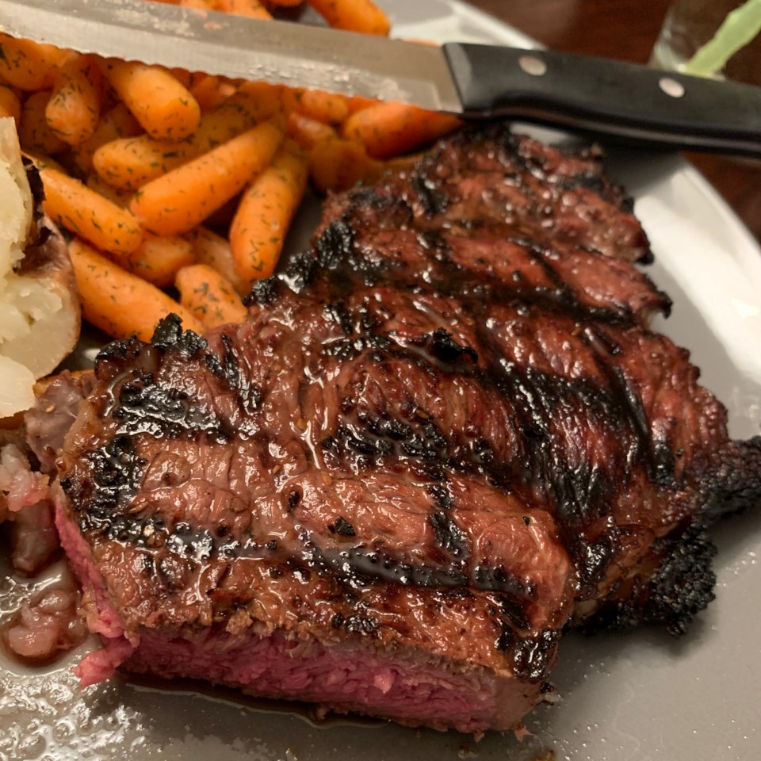

The Best Steak Marinade

We use this marinade for rib steaks, but can be used for almost any cut of beef.
This is a nice quick recipe for savory marinade.
Have your taste buds explode with this perfect combination of flavor.
Ingredients
- 1/4 cup of olive oil
- 1/4 cup of balsamic vinegar
- 1/4 cup of soy sauce
- 1/4 cup of Worcestershire sauce
- 2 tsps of Dijon Mustard
- 2 tsps of minced garlic
- pinch of salt and pepper
Steps
- Mix olive oil, balsamic vinegar, Worcestershire sauce, soy sauce, Dijon mustard, and garlic in a small bowl
- Season with salt and pepper
- Marinate steaks for at least 2 hours for best flavor.